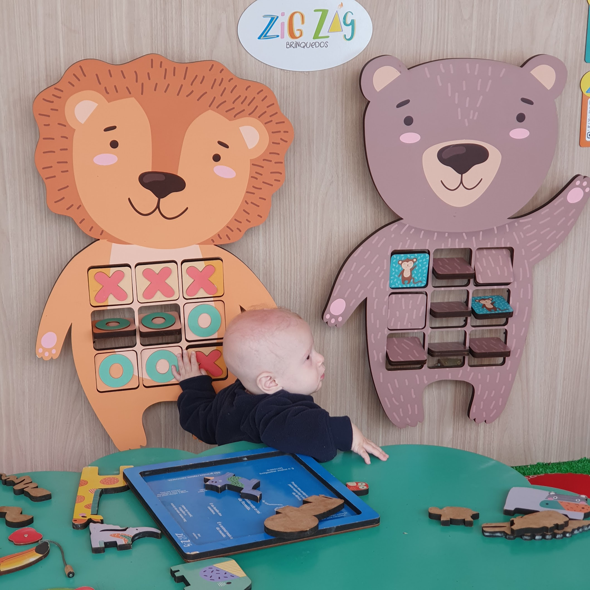
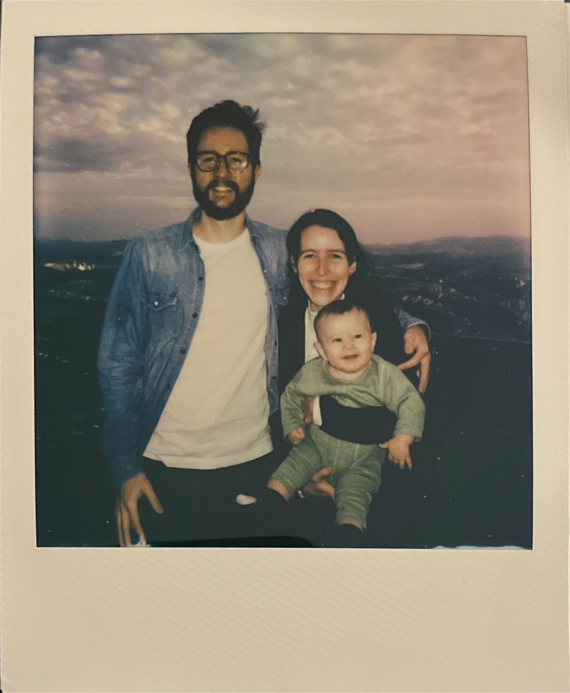
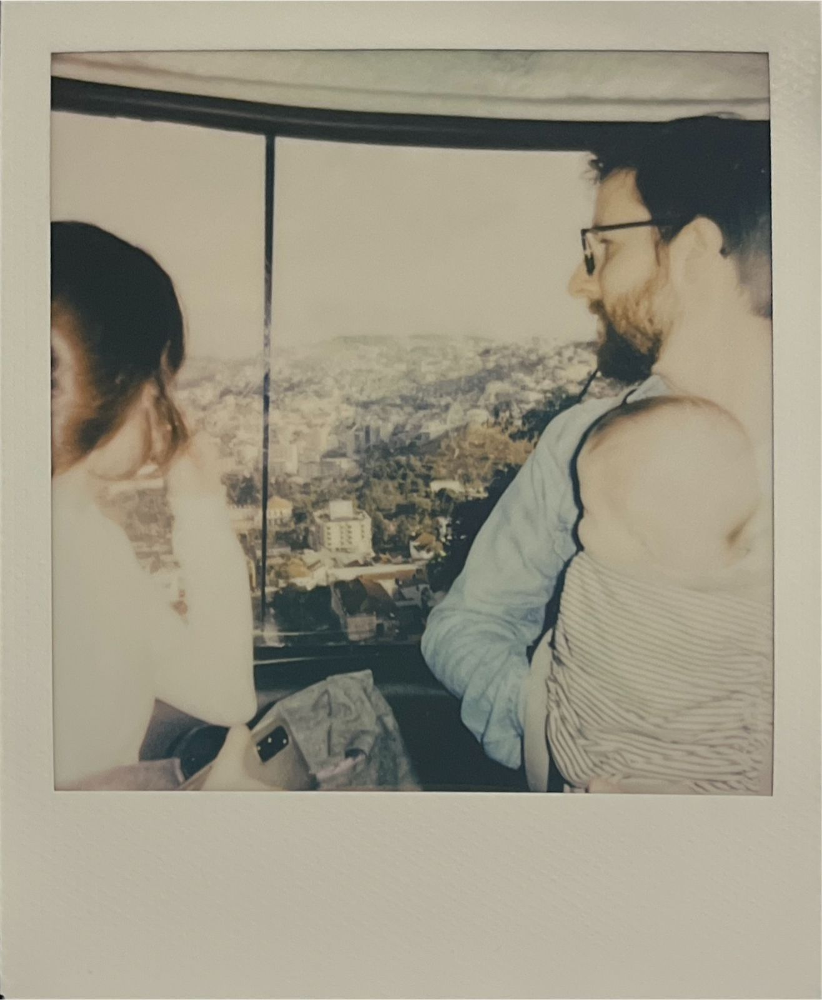

O Guia Danielzin surgiu em 2024 quando nós, os fundadores do bebê Daniel, notamos o grande afluxo de viajantes na cidade de Poços de Caldas para visitá-lo. Com o intuito de facilitar a escolha dos passeios com o bebê e aos que querem explorar por conta, reunimos nessa página o que conhecemos de melhor dessa cidade vulcânica e de águas termais.
O guia é feito através da visita de um inspetor não anônimo (bebê Daniel) aos cafés, restaurantes, e atrações turísticas da cidade. Essa metodologia garante uma grande parcialidade na avaliação, principalmente quando na presença de brinquedotecas. O guia não utiliza o conceito de estrelas e muito menos quantifica sua avaliação. Não obstante, seguimos trabalhando para o entendimento dos números um, dois e três pelo bebê Daniel.
Todos os lugares estão nessa lista no Google Maps, embora ela tenha muitos outros que não recomendamos, ou ainda não fomos.
Esperamos que esse guia seja útil e agradecemos a visita.
Table of Contents
Cafés
SOMOS - Atelier de cozinha
Adoramos! Gostamos do sanduíche da pastrami, do cookie de caramelo salgado, o panetone deles foi (é e será?) o melhor que já comemos e eventualmente tem novidades no cardápio que são deliciosas, como um croissant prensado com mel e sorvete de laranja.
Âncora Coffee House
Nós nos apaixonamos pelo queijo quente deles e comemos diversas vezes. Servem com chutney de tomate. Temos a impressão que o mix dos queijos mudou desde que conhecemos, mas continua ótimo.
No mais, é um café muito bom. Usam grãos da região e também vendem. Fazem drinks com café. Experimentamos o Mad men e gostamos. Ambiente legal e atendimento bom.
Nita padaria artesanal
É nossa padaria preferida, compramos o pão branco, pão integral, baguete e homus deles com frequência. O pão de queijo na chapa é muito bom.
Maturare Queijaria e Cafeteria
Já comemos pão de queijo lá algumas vezes, sempre estava fresco e delicioso. Tem algumas mesas que tem vista da praça e da serra. Já levamos queijos de lá, embora não saibamos ainda se os preços são bons.
Lascaux
Gostamos muito do chocolate quente (tanto o tradicional quanto o "Mexicano") e do pão de queijo. O café coado é bom. Comemos o sorvete de pistache com chocolate branco uma vez e estava ótimo.
Eles fazem chocolates inspirados em rochas, já comemos diversos sabores. Todos são feitos com ingredientes naturais.
Tem uma pequena brinquedoteca.

Pátio de Pedra
O pão de queijo não estava quentinho e isso comprometeu um pouco, mas o ambiente é legal e dá pra comprar o queijo deles, que é maravilhoso! Fica ótimo pra fazer queijo quente, pois ele derrete e não solta óleo, ao mesmo tempo que fica com uma elasticidade de queijo derretido. Ele fica bem congelado, então é possível fracionar e consumir aos poucos.
Tem um cachorro enorme que as crianças adoram.

Fazenda Irarema
Produzem azeite. Há um café e um buffet para brunch/almoço. A comida do buffet é simples, come-se à vontade por R\$90 (se nos recordamos bem). O local é bonito e existem atividades guiadas pagas - nunca fizemos nenhuma. Apenas fomos para o almoço. Os azeites são bons - não que eu entenda muito de azeite. Dá para provar todos na loja, ou no buffet.
Panedota
Já tivemos experiências boas e ruins aqui. A melhor foi com o folhado de abobrinha.
Officina 8 BIKE COFFEE
Pra tomar café em uma oficina/loja de bicicleta. Fomos uma vez apenas, o ambiente é legal, o café estava bom.
Hotéis
Cervejaria
Porcaria & Chopperia
Local com chopps regionais e de fabricação própria. Bons preços, ótima variedade de chopp e a comida é boa. Gostamos do pão de alho.
Gonçalves
Nunca fomos ao bar da Gonçalves, mas já pedimos as cervejas de lá por delivery e para presentear. Também é possível encontrar em alguns mercados de Poços. A dubbel foi a preferida.
Mercadão
Rota de magalhães
Fomos lá para comprar queijos de cabra e acabamos encontrando outros queijos da Serra das Antes que adoramos. O Lua Cheia é o principal deles, é um queijo bem cremoso, com uma textura de camembert. A Serra das Antas também reproduz alguns queijos franceses, como o Saint Paulin, Saint-Marcellin e Bouchette. Eles vendem também da caprivita. Alguns queijos da Serra das Antas é preciso encomendar, caso queiram, temos o contato deles. Fica do lado de fora.
Tradicafé
Passopreto
Ao lado do Tradicafé. Está sempre com movimento. Os chopps são
Banca 15
Compramos queijo meia cura do que vendem no balcão, estava bom todas as vezes. Eles também vendem o queijo pátio de pedra, por R\$99/kg, enquanto na loja da fazenda é R\$75. É onde compramos queijos regularmente. Aceitam Alelo.
Restaurantes
Furto pizzaria
É nossa pizzaria predileta de Poços. E diria que um top 3 da vida! Recomendamos:
- Lorota: abobrinha, muçarela, parmesão, burrata e raspas de limão siciliano;
- Chevrette: berinjela e queijo de cabra;
- Brocada: queijo pátio de pedra, brócolis e pancetta italiana.

Polenta Vino e Cocina
É um restaurante italiano que gostamos de alguns pratos. Dê uma olhada nas avaliações do Maps, pois parece que nem todos os pratos agradam. Gostamos do stinco, pudim de pistache, papardelle com ragu, e o cacio e pepe. O local é bem bonito e o teleférico passa bem em frente, então dá pra ficar assistindo as cabines passando.
Ollivia
Costumava ser o nosso restaurante predileto, mas a qualidade variou muito ultimamente e pratos que gostávamos saíram do cardápio. Fica ao lado de casa. Ainda tem alguns pratos bons, como o bacalhau na nata. Preços altos.
Do cardápio atual, o Gravlax é muito bom.
A brinquedoteca é a melhor que já vimos em Poços. Inclusive, tem pessoas que ficam supervisionando as crianças.

L'ami bistro
Fomos uma única vez. Foi complicado ir de carrinho, pois o único acesso é uma escada e o local é todo um pouco estreito.
A comida estava boa. Como era páscoa, comemos o bacalhau.
Pizzaria Napoletana
É bem próxima de casa e por isso é a pizza que comemos em casa. O local também é agradável. Gostamos da margherita e amatriciana.
Coyote Tap House
Nunca fomos no local, mas é onde pedimos hamburguer.
Pesto cozinha & bar
Gostamos do atum selado e da coxinha de pato. Tem cadeirão pra bebês.
Pontos turísticos
Parque do Cristo
A vista é bonita. Tem um "café do cristo" na base do cristo e uma galeria com lojas de produtos locais e versão mini de restaurantes da cidade (Nita, Napoletana, Gonçalves)

Teleférico
R\$68 inteira, R\$34 meia.
É um passeio bem legal. A vista é bonita e a sensação de flutuar pela serra é bem gostosa (embora imaginemos que não para todos). Cuidado com a volta, pois forma-se uma fila gigante de pessoas querendo voltar no final do dia. O bebê Daniel é extremamente útil nesse cenário, pois pega fila prioritária.

Parque municipal
Bem próximo de casa, vamos quase semanalmente. Ótimo pra ficar sobre uma toalha e desfrutar da vista.